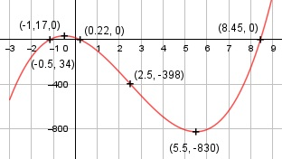

Aufgabe 42 f(x) = 8x3 - 60x2 - 66x + 17 f'(x) = 24x2 - 120x - 66, f''(x) = 48x - 120, f'''(x) = 48 Definitionsbereich: -∞ < x < ∞ Wertebereich: -∞ < f(x) < ∞ Asymptoten. - Symmetrie: - Nullstellen: 8x3 - 60x2 - 66x + 17 = 0 Wertetabelle: -2 -1 0 1 2 3 4 -155 15 17 -101 -291 -505 -695 5 6 7 8 9 -813 -811 -641 -255 395 Vorzeichenwechsel zwischen -2 und -1 --> Nullstelle gewählt x01 = -1,1, Vorzeichenwechsel zwischen 0 und 1 --> Nullstelle gewählt x02 = 0,15 Vorzeichenwechsel zwischen 8 und 9 --> Nullstelle gewählt x03 = 8,4. Newtonsches Näherungsverfahren: f(x0) x1 = x0 - ------- f'(x0) 8*(-1,1)3-60*(-1,1)2-66*(-1,1)+17 x1 = -1,1 - ----------------------------------- 24 * (-1,1)2 - 120 * (-1,1) - 66 x1 = -1,1 - 0,07 = - 1,17 8*(0,15)3-60*(0,15)2-66*0,15+17 x2 = 0,15 - --------------------------------- 24 * (0,15)2 - 120 * 0,15 - 66 x2 = 0,15 - (-0,07) = 0,22 8*(8,4)3 - 60*(8,4)2 - 66*8,4 + 17 x3 = 8,4 - ------------------------------------ 24 * (8,4)2 - 120 * 8,4 - 66 x3 = 8,4 - (-0,05) = 8,45 N1(-1,17|0), N2(0,22|0), N33(8,45|0) Schnittpunkt mit der y-Achse: f(0) = 8 * 03 - 60 * 02 - 66 * 0 + 17 = 17 Sy(0|17) Extrempunkte: 24x2 - 120x - 66 = 0 A, B, C - Formel: A = 24, B = -120, C = -66 x1,2 = x1,2 = x1,2 = 120 ± 144 x1,2 = ----------- 48 x1 = 5,5 f(5,5) = 8 * (5,5)3 - 60 * (5,5)2 - - 66 * 5,5 + 17 = -830 x2 = -0,5 f(-0,5) = 8 * (-0,5)3 - 60 * (-0,5)2 - - 66 * (-0,5) + 17 = 34 f''(5,5) = 48 * 5,5 - 120 > 0 --> Tiefpunkt (5,5|-830) f''(-0,5) = 48 * (-0,5) - 120 < 0 --> Hochpunkt (-0,5|34) Wendepunkte: 48x - 120 = 0 |+120 48x = 120| :48 x = 2,5, f(2,5) = 8 * (2,5)3 - 60 * (2,5)2 - 66 * (2,5) + + 17 = -398, f'''(2,5) ≠ 0 --> Wendepunkt (2,5|-398) Graph:
